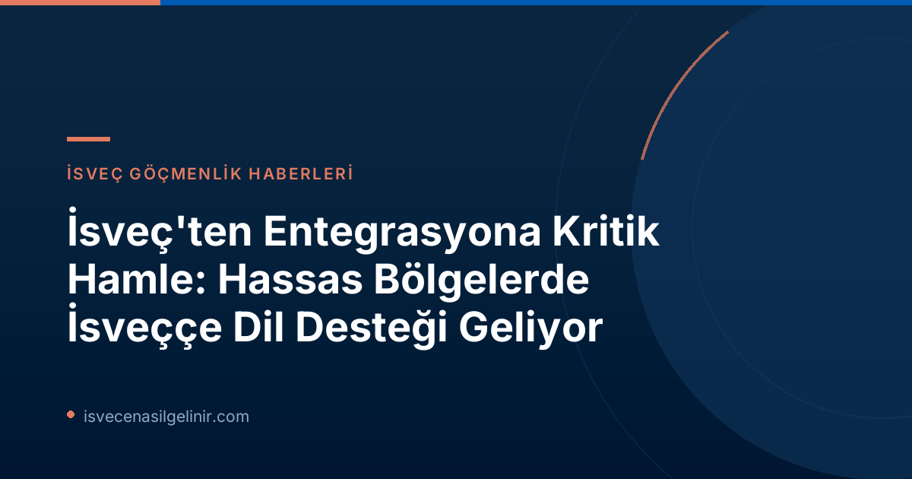

İsveç Hükümetinden Entegrasyonu Derinleştiren Stratejik Hamle: Dilin Vazgeçilmez Gücü
28 Haziran 2026 tarihinde SVT Nyheter Inrikes tarafından yapılan duyuruya göre, İsveç Hükümeti, ülkedeki entegrasyon zorluklarına karşı somut bir adım atarak, hassas bölgelerde İsveççe dilinin konumunu güçlendirmeye yönelik yenilikçi bir araştırma başlattı. Eğitim ve Entegrasyon Bakanı Simona Mohamsson (L), bu girişimin toplumsal uyum ve karşılıklı anlayış için dilin ne denli kritik olduğunu net bir şekilde ortaya koydu. Mohamsson’un da belirttiği gibi, "İsveççe konuşmak, topluma yerleşmek için hayati öneme sahiptir. İnsanlar iletişim kurabildiğinde ve birbirini anladığında, hem toplumsal uyum hem de toplumsal bütünleşmenin bir parçası olma fırsatı güçlenir." Bu açıklama, entegrasyon politikalarının merkezine dil eğitiminin yerleştirilmesinin ardındaki temel felsefeyi özetliyor.
Araştırmanın Kapsamı ve Detaylı Hedefleri
Hükümetin aldığı bu karar, sadece bir niyet beyanı olmanın ötesinde, çok boyutlu ve kapsamlı bir yol haritası sunuyor. Yaklaşık bir yıl sürecek olan bu araştırma, bir dizi temel alanı kapsayacaktır:
- Dil Durumunun Haritalandırılması: İsveççe dilinin ülkenin farklı bölgelerindeki mevcut konumunun detaylı bir analizi ve haritalandırılması yapılacak. Bu, özellikle hassas bölgelerdeki dil yeterlilik seviyelerini ve dilin erişilebilirliğini ortaya koyacak.
- Entegrasyon ve Dışlanma Dinamikleri: İsveççe dil becerisinin entegrasyon süreçleri ve toplumsal dışlanma üzerindeki etkilerini inceleyecek. Dil bariyerlerinin, işgücü piyasasına katılım, eğitim fırsatları ve sosyal yaşam üzerindeki etkileri değerlendirilecek.
- Fırsat ve Teşvik Mekanizmaları: Daha fazla insanın İsveççe öğrenmesini teşvik edecek ve bu süreci kolaylaştıracak yeni fırsat ve teşvik mekanizmaları geliştirilecek. Bu, mevcut dil eğitimi programlarının gözden geçirilmesini ve yenilerinin tasarlanmasını içerebilir.
Önemli Bilgi: Araştırma Teslim Tarihi
Bu kapsamlı görevin sonuçları en geç 31 Ağustos 2027 tarihine kadar rapor edilmelidir. Bu süre, belirlenen hedeflere ulaşmak ve önerileri geliştirmek için detaylı bir çalışma yapılmasını sağlayacaktır.
Dil Becerisi: Toplumsal Uyumun Anahtarı
Bakan Simona Mohamsson'un sözleri, İsveç toplumunda dilin yalnızca bir iletişim aracı olmaktan öte, toplumsal yapıyı bir arada tutan ve bireyleri topluma dahil eden temel bir unsur olduğunu vurguluyor. Dil, yeni bir kültüre adaptasyonun, iş bulmanın, eğitimine devam etmenin ve sosyal çevreyi genişletmenin ilk ve en önemli adımıdır. İsveç’te başarılı bir entegrasyon süreci için, bireylerin kendi yeteneklerini tam olarak ifade edebilmeleri ve İsveç toplumunun normlarını, değerlerini anlayabilmeleri hayati önem taşır. Bu bağlamda, İsveç Vatandaşlık Sınavı sadece bir test değil, aynı zamanda İsveç toplumuna tam anlamıyla entegre olabilmek için gerekli dil ve kültür bilgisinin bir göstergesidir.
Kimleri Etkileyecek ve Gelecekte Ne Gibi Değişiklikler Getirebilir?
Bu araştırma ve muhtemel sonuçları, İsveç'te yaşayan birçok insanı doğrudan etkileme potansiyeline sahip. Özellikle hassas bölgelerde ikamet eden göçmenler ve yeni gelenler için dil öğrenim süreçlerinde önemli iyileşmeler ve destekler sunulması bekleniyor. Bu girişim, sadece bireylerin dil becerilerini artırmakla kalmayacak, aynı zamanda İsveç toplumunun geneline yayılan bir kültürel ve sosyal entegrasyonu teşvik edecektir. Gelecekte, daha erişilebilir dil kursları, yeni finansal teşvikler veya topluluk temelli dil öğrenme programları gibi yenilikçi politikalar gündeme gelebilir.
İsveççe Öğrenimine Dair Mevcut Fırsatlar ve Beklenen Yeni Teşvikler
İsveç, uzun yıllardır göçmenlere yönelik çeşitli dil eğitimi programları sunmaktadır. Bunlardan en bilineni SFI (Svenska för invandrare) olmuştur. Ancak bu yeni araştırma, mevcut sistemdeki eksiklikleri gidermeyi ve daha etkili, motive edici yaklaşımlar sunmayı hedefliyor. Örneğin, dil kurslarına katılımı artırmak için kişiselleştirilmiş öğrenme yolları, dijital platformlar üzerinden dil eğitimi, veya iş entegrasyonuyla birleştirilmiş dil programları gündeme gelebilir. Ayrıca, dil becerisi geliştikçe vatandaşlık süreçlerinde avantajlar sağlanması gibi teşvik mekanizmaları da değerlendirilebilir.
Uzman Görüşü: İsveç'teki Gelecek Görünümü
İsveç göçmenlik danışmanı olarak, bu girişimin İsveç'in uzun vadeli entegrasyon hedefleri için kritik bir adım olduğuna inanıyorum. Dil, sadece bürokratik engelleri aşmak için değil, aynı zamanda İsveç kültürünü ve toplumsal yaşamını anlamak, yerel halkla bağ kurmak ve tam anlamıyla bir birey olarak var olabilmek için vazgeçilmezdir. Bu araştırmanın sonuçları, İsveç'in göçmenlik politikalarına yön verecek önemli verilere ışık tutacak ve gelecekteki yasal düzenlemelerin temelini oluşturacaktır. İsveç'e gelmeyi düşünen veya burada yaşayan herkese tavsiyem, İsveççe öğrenimine öncelik vermeleri ve bu süreci bir yatırım olarak görmeleridir.
Referanslar:
- SVT Nyheter Inrikes: Svenska språket ska stärkas i utsatta områden (Dofollow Link İşareti)
İsveç'e Uyum Sürecinizi Hızlandırın!
İsveç'te yaşam ve vatandaşlık süreçleri hakkında en güncel ve kapsamlı bilgilere ulaşmak için sitemizi keşfedin. Dil öğreniminden yasal prosedürlere kadar her konuda yanınızdayız.